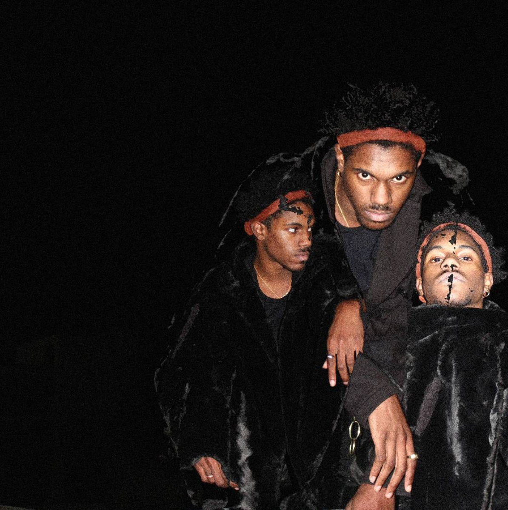

What’s your medium - what do you create?
I’ve always considered myself a writer, but this year I’ve been doing a lot of experimenting. I’ve been
making visual art on the computer – I’ve started recording some of my poems, and I’ve started filming things
too to go with the readings. I’ve also looked into print making with stuff that I’ve made, and I’m trying to
get a camera for Christmas so I can do photography too. I’m trying to figure out something that sticks.
Cool. So where’d you grow up?
Everywhere really. I was born here - In New York? - Yeah, like, in Harlem. Then my Dad joined the army
when I was 3 years old, so we moved around a lot. I was in Georgia the state for about 4 years, then I was
in Germany for middle school, and then I came back to a different part of Georgia, and then I came here.
What’s your favourite place that you’ve lived?
I liked Germany a lot, but I think that was just because it was during a certain time of my life. Objectively
I think Georgia was OK...I just don’t like the South. It’s like a whole different way of living: there isn’t
a lot going on unless you were going to the big city; and everyone knew each other; and everyone’s really
nosy and I’m not with that.
I feel. I remember when I met you in freshman year you were pre-med.
Yeah, I still am still actually - somehow.
So you wanna be a doctor?
No, my mom wants me to be a doctor. I tried to quit pre-med last year around this time after I failed a
class. But my mom was like, if you don’t wanna do a bio degree then leave Columbia, because you can get a
liberal arts degree anywhere and we sent you here specifically so you can get into med school.
And you wanna stay at Columbia?
Yeah I was like I don’t wanna leave, so I’ll just deal with it. So now I’m taking that class again and
hopefully I pass this time.

Do you find that your workload impedes your creativity?
Absolutely. Not just because it stops me from thinking, but because I never have time. Also I’m not
particularly good at science stuff, so I have to work really hard to be able to pass, which means that I
spend all my time in the library and I don’t really have time to write. So all my free time - which I barely
have - goes to my art. I’m sure I could use it for better things, like getting better grades, but I feel
like I couldn’t live if I couldn’t write, so...yeah.
When I graduate, I’m either gonna work somewhere or go to graduate school. I’m not going to med school; I
know I just would not survive. But I might go to graduate school for research science, because I like lab
work and it gives me time to do extra stuff.
You wanna make sure you have time to write? Will you definitely carry on?
Yeah I’ve tried to stop but I really can’t do it. It’s the one thing that make me happy sometimes. My
ultimate goal is to be able to survive off writing or art fully as a career, but that’s difficult and it
might not come for years - but I’m prepared to wait it out.
What’s your creative process like?
It depends: I have to either be in a really great mood, or caffeinated. With my writing, I have a notepad
open on my desktop at all times, so if I think of something I can just jot it down. And then for poetry, I
can’t do it unless I’m in a really creative mood, then I can churn out like 3 poems a night, but then I
won’t get any more done for a week or so. I try to write fiction every night. For visual art I use
photoshop; so I’ll have a picture of me or something, and a picture of some random thing, then I’ll add them
together, then I’ll add different elements. And then when you edit brightness and colours and all that, it
can look like you didn’t even edit it. So it’s kinda tedious but it’s really fun. I’ve been looking into
putting words to it, but it’s hard to make it not look cheesy.
Nothing wrong with a bit of cheese, though. Do you think that your visual arts and your writing comes from
the same place - like in terms of what you’re trying to express?
Most of my poetry’s really personal: it’s based on my experiences and my emotions. I would say that my visual
art comes from the same place as my fiction, which is less personal and more imagining things that I want to
happen, and that’s why it’s more fantastical and less personal and intense sometimes. Maybe that’s why it’s
hard for me to add poetry to my visual art.
I was reading some of your poems last night, and there’s a lot of religious imagery in there. Are you
religious at all?
My family’s really religious, but I’m not that religious. I guess I’m spiritual? But I’ve never been a super
religious person...so I’m like damn I’m really out here sinning and stuff. But I also can’t bring myself to
be super spiritual cus that’s just not how I am. So a lot of my poetry is struggling with that. It’s more
than just like, “Oh I’m sad today”, it’s more like, “Wow if I have a soul I don’t know what’s gonna happen
to it when I die”. It’s really heavy. I sometimes try to write without religion, but it always comes up. I
don’t think it’s something I can escape from.
So it’s something you think about a lot, I guess - subconsciously at least?
Yeah definitely. Especially in relation to my family, which I also write about a lot.
Yeah I noticed you write about family that you imagine having -
Yeah or that I don’t imagine having. Like, absences. I think a lot about absences a lot...alternate
memories...
I used to do poetry slams in high school and I would do really basic shit, like love poems – flowers and all
that. It was lame. And my teacher was like, “Anyone can write this shit, you have to tell your own story”.
So I was like, “you’re not wrong”, and I started trying to write about things that only I can write about
and that no one else can.
I’d definitely say that what you write is pretty original.
Thank you. With poetry I read a lot of other poetry to get me there, but with the rest of my writing I’m not
really inspired by other writing. I’ve been inspired by a lot of classical art; I’ll go to the museum and
it’ll make me want to write. I get inspired by a lot of film and a lot of media too, like old TV shows.
Music also inspires me a lot with fiction. I can’t write without listening to music, it just won’t happen.
What kind of music do you listen to when you write?
I can’t do stuff that’s really lyrical, unless I have one song on repeat and I tune it out. I listen to a lot
of obscure movie soundtracks and TV soundtracks from the 80s. It’s not the stuff I usually listen to.
What’s the biggest project you’ve worked on so far? Or the one that you’re most proud of?
I think biggest in terms of most work put into it - that’s out already - is either one of my novels or my
poetry chapbook that I did last January. I’ve finished 2 and a half novels so far, and I designed my own
covers and printed them myself. But they’re low-key; I’ve never sold too many, they’re just for my own
accomplishment. But my poetry chapbook was very much a public project: I had an event to read from it and
sell it - I sold a lot – and I made it with the help of some of my friends, and I had a photo-shoot with
someone else to get the pictures for it. It was very much a collaborative effort, so it felt really big.
Have you ever sent stuff to publishers?
I’ve sent my books before but they’ve never been accepted, so I’ve just gotta keep on going I guess. I’ve
actually had one poem published by a website though.
Nice, what was the poem?
It was called Autumnal Dead and it was an extended metaphor comparing leaves falling to black people dying.
Like we care about leaves falling - like it’s this big event in the Fall - but then we forget about the
people who die. And then also how I hope that if I ever fall one day someone picks me up.
I also wanna talk about the radio show I did this semester. It was at like 2 in the morning on a Sunday
night, so I don’t think anyone ever listened. I started off playing music that I like, but it ending up
getting really obscure – stuff that no one would listen to on purpose. Then I would use this text-to-speech
thing for the DJ tag, and then I started making it say shit – like lines from my poems – and it was really
cool how well it went with the crazy music. And I was like damn, if this was someone else I would be really
into it.
Is any of that recorded?
It’s archived on the WBAR website, but I don’t know how long that’s up there. I’m gonna apply for it again
next semester.
Maybe you’ll get an earlier slot.
Hopefully. I actually stay up late all the time - I’m really nocturnal, so it worked out well anyway.
Did that work with classes?
Yeah. I used to have early classes but I would be so awful at getting up, so now I only take late classes.
I’ve been doing that this semester, too.
It’s good but I also feel like shit when I wake up at like, 1pm.
Yeah and everyone else is basically done with their day already.
Yeah and it gets dark in like 2 hours...but I also don’t care.